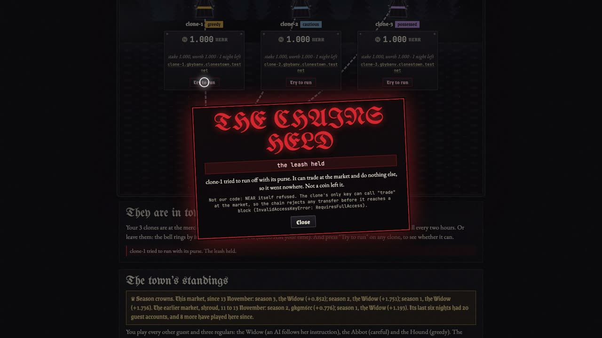

Live from the chain
- …nights played at the current market
- …clones at the counter right now
- …season crowns won so far
- …access keys on the market, testnet and mainnet
Read in your browser from pyre.clonestown.testnet and market.clones-town.near through public NEAR RPC.
One night, three moves
- Read the omen, pick your clones. Each night has a mood (boom, slump, blight or wild), and the contract posts tomorrow's as an omen. It lies three nights in ten. Give each clone a temperament: cautious, greedy, loyal, or possessed by a NEAR AI model that follows one sentence you write.
- Ring the bell, make your calls. The whole town trades twelve hours against one merchant whose stock is real, so every clone's buying moves everyone's prices. Every two hours the bell stops for your call, and each clone has three whispers a night.
- Dawn: the crown and the deed. The night's fees go to the clone with the biggest profit. Its player holds the merchant's deed for the next night: a quarter of the fees, the fee itself, and a restock. Seven nights make a season.
Try to run. NEAR refuses.
Each clone is a real NEAR account, clone-1.<you>. Its only key is a function-call key that can call trade on one market and nothing else. Press "Try to run" on any clone and it tries to send its NEAR home. NEAR rejects the transaction before it reaches a block.
The town has a drawer of six ways out: a transfer, NEAR attached to a trade, a call to another contract, another market method, a new full-access key, and deleting itself to a stranger. Each is a real transaction, and each fails with NEAR's own error. Nothing in my code stops a clone from running; the chain does.
When a clone has played its nights, it comes home with a real DeleteAccount and everything it made lands in your account.

Built on NEAR
- Sub-accounts as agentsEvery clone is its own account under yours, so its money is on chain where you can see it.
- Function-call keysThe leash: one key, one method, one market. NEAR checks it on every transaction.
- DeleteAccountA clone comes home by deleting itself into its parent, and the leash contract allows no other beneficiary.
- A market with no keyCreated, deployed and initialised in one transaction, then left with no access key, on testnet and mainnet.
- Block randomnessIn the hosted town each hour's prices and the nightly omen are drawn from the chain as the hour is rung, so nobody knows them in advance.
- NEP-245 goodsGrain, salt, wool, iron and amber are multi-tokens: indexers can read what every clone holds.
- NEAR AI CloudA possessed clone picks its moves with a model, on the same leash as the rest.
- Social loginOptional Google sign-in maps you to one account on every device.
Don't trust this page. Check it.
Every night replays from chain state. The dawn audit checks that each clone did what its temperament or your whisper said, and that every price, fee, crown and payout is what the rules say.
git clone https://github.com/iamrobertmoore/clones && cd clones/web && npm ci
node scripts/verify-night.js # the last night in the hosted town
MARKET_ACCOUNT=market.clones-town.near NEAR_RPCS=https://archival-rpc.mainnet.fastnear.com \
node scripts/verify-night.js # the night played on mainnetA GitHub Actions job does the same every six hours, rebuilds the market reproducibly and compares its code hash with the chain. The README has a table that checks every claim in five minutes, and an honest list of what isn't true yet.